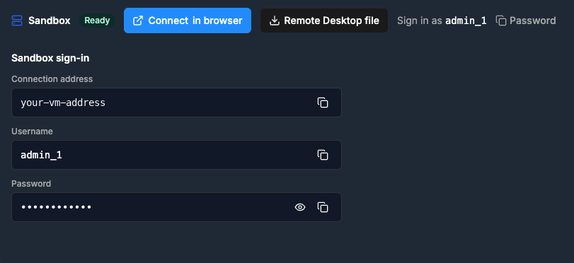
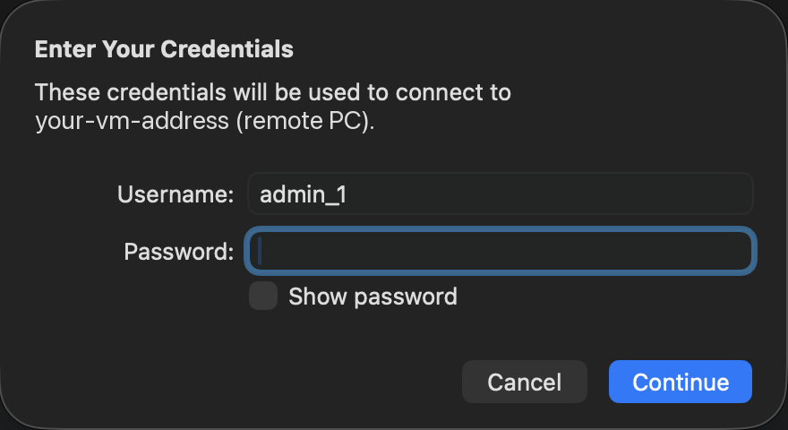
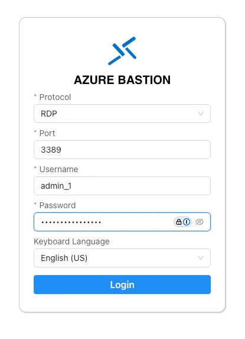
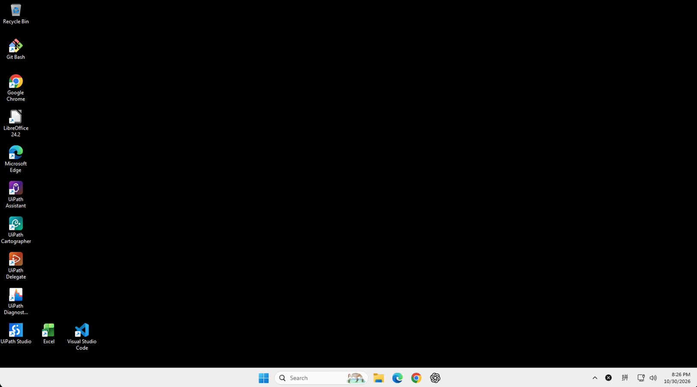

Step 2 of 3
🖥️ Connect to Your VM¶
Open your VM with Remote Desktop, or in a browser tab with Azure Bastion. From here on, you work inside the VM.
🔌 Choose how to connect¶
Open your workshop page. Sandbox sign-in shows the VM's Username and Password, with copy buttons.

Remote Desktop is the recommended way. Use Azure Bastion if you can't use a Remote Desktop client.
- Next to Sandbox, select Remote Desktop file.
- Open the downloaded
.rdpfile. It opens in Remote Desktop Connection on Windows, or in Windows App on a Mac. - When you're asked for credentials, enter the Username from Sandbox sign-in:
admin_1. -
Select the copy button next to Password in Sandbox sign-in, paste the password, and select Continue.

-
If you're warned that the VM's certificate can't be verified, select Continue.
- Wait for the VM's Windows desktop to load.
Azure Bastion opens the VM in a Chrome tab, so you don't need a Remote Desktop client.
- Next to Sandbox, select Connect in browser.
-
In the Azure Bastion form, keep Protocol on RDP and Port on 3389. Enter the Username and Password from Sandbox sign-in, pick your Keyboard Language, and select Login.

-
When your browser asks whether to allow clipboard access, accept it.
- Wait for the VM's Windows desktop to load in the browser tab.
Can't paste into the VM with Ctrl+V?
In Chrome on your own machine, open chrome://settings/content/clipboard and make sure the Bastion site isn't under Not allowed to see your clipboard. Then reload the Bastion tab.
🧰 Your VM desktop¶
When the VM opens, you see its Windows desktop. This is where you work in the hands-on workshops. Your work stays on the VM until the date in the Sandbox created email.

The tools you need are already installed, with shortcuts on the desktop: Google Chrome, UiPath Studio, UiPath Assistant, Visual Studio Code, Git Bash, and Excel. You don't need to install anything.
📋 Check copy and paste¶
Copy something on your own machine, then paste it into the VM, for example into the Windows search box. If it pastes, you're done.
Ready for the next step
The VM's desktop is open, and pasting into it works. From now on, do every step inside the VM. Next: sign in.